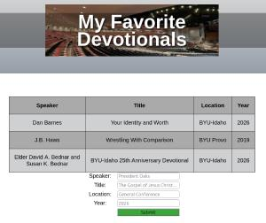
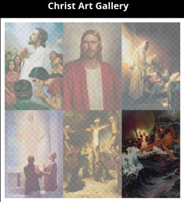
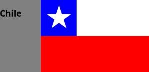
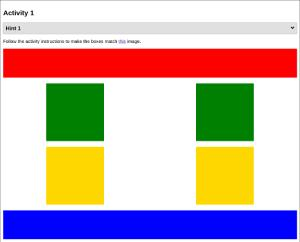
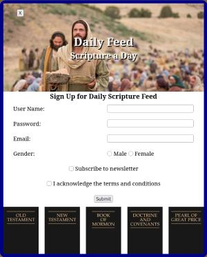

In this ICE challenge we had to align the different apostles in a grid or flex. In this ICE I learned more on how to use a flex and grid.
Open Here
During this ICE challenge we had to create a sheet that displayed information that could be sent in using a form. We also had to create and style the form. I learned a lot on how to use forms in this ICE challenge.
Open Here
During the ICE gallery challenge we learned about how to comprese pictures on a website to take up less space. That way when you load a website it loads faster and costs less to load. I learned a lot about image compression and was able to use it on this website as well.
Open Here
In the Grid Flags ICE challenge we had to use only Grid to create the designs of various flags. I learned a lot on how to use grid more when designing websites and creating basic pictures.
Open Here
In the positioning ICE challenge we had to use Grid to move divs around to create an image that was shown to us. I learned more on how to use Grid more effectively in css when designing websites.
Open HereIn the Prophet Cards ICE challenge we had to use grid and flex to create a card for a prophet. We did this copying an image that was shown to us. I was able to improve my skills using grid and flex in this assignment. I was also able to improve how to follow a wireframe.
Open Here
In the Signup ICE challenge we were shown a wire frame and had to replicate it. We also got to have practice on how to style forms. I learned a lot more about forms and how to make them look better.
Open Here